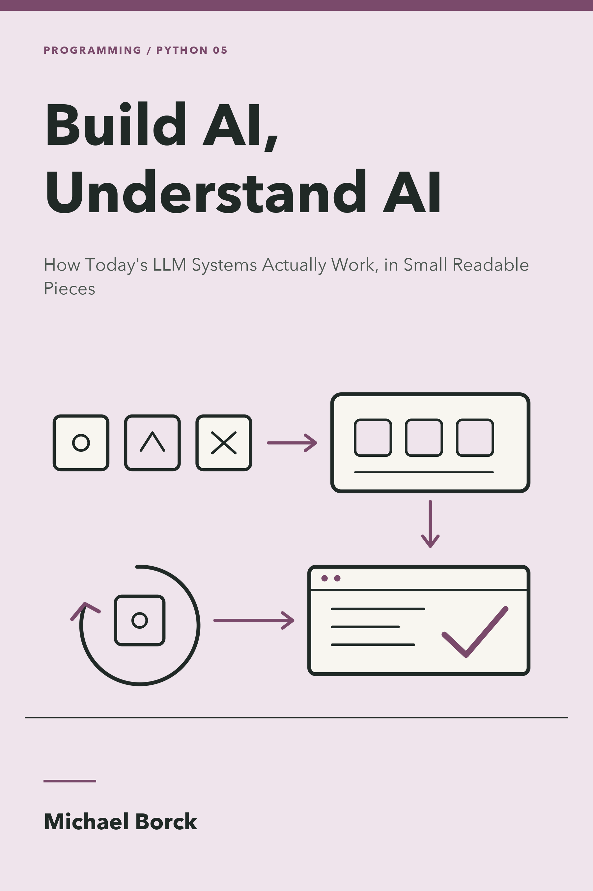

Build AI, Understand AI
How Today’s LLM Systems Actually Work, in Small Readable Pieces
Preface

Why This Book Exists
You use LLM systems every day. You type into a chat box, upload a document and ask questions about it, watch a tool fetch a web page and reason over it. And if someone asked you what actually happened in there, you would probably say something vague about “the model”. That vagueness has a cost: it is where confident nonsense gets past you.
The machinery is not that complicated. Strip away the dashboards and the marketing, and every LLM system in that first paragraph is one call to a model, wrapped in plain Python. A chatbot is that call plus a paragraph of instructions. A document question-answerer is that call plus a search. An agent is that call plus a loop that runs your functions. The package this book pairs with, hands-on-ai, makes each of those small enough to read in an afternoon, because when the whole thing fits in your head, the concept becomes visible.
A note on the title’s word, since this book will spend eighteen chapters teaching you to check claims like it: AI is a wider field than this book. It includes search and symbolic reasoning, the classical machine learning of decision trees, support vector machines, and clustering that has filtered your spam and scored your transactions for decades, and the deep learning that produced both image classifiers and the large language models, LLMs, at this book’s centre. Those older branches still run much of the world’s consequential automation, often better than an LLM would. This book keeps the umbrella word for its title and earns it narrowly: Parts I to V are about LLM systems, and the optional Part VI opens with the older AI on its own terms before turning to the training loop itself. When any vendor, this book included, says “AI” without saying which branch, you will know to ask.
This book walks those builds in a deliberate order, in five parts that need nothing beyond a model you can call. You will write a little Python and read a little more. What you will not do in those five parts is train anything, install a framework, or take anyone’s word for anything. An optional sixth part, clearly fenced, then opens the box a crack: it trains toy models in notebooks, at toy scale, for readers who want to see that side too. By the end, when a demo answers fluently, you will know which parts of what you saw were the model and which were a harness someone wrote on a Tuesday.
Who This Book Is For
- Daily users of AI tools who want to know what is underneath them
- Students and teachers who want the concepts without a vendor tutorial
- Speak Software graduates who directed agents and now want to see the machine
- Programmers who will build on real frameworks, but want to understand first
What This Book Is Not
It is not a Python course. Appendix A teaches every construct the book uses, in ten pages. For the language itself, read Code Python, Consult AI.
It is not Speak Software. That book puts a department of AI agents at your command, no code required. This one opens the box those agents are built on. If you want to run AI without ever touching code, read that one first; if you want to know what you were running, read this one.
It is not Ship Python, Orchestrate AI. You will build workflows, loops and judges here in miniature, to understand them. Production form is that book’s job.
And it is mostly not a machine-learning book. Parts I to V keep the original promise: no training, no gradients, no maths beyond Appendix A, with the model treated through its one documented door. Part VI breaks that fence deliberately and in the open. It is optional, notebook-based, and simplified rather than production-ready, and it declares its extra prerequisites (PyTorch, and a free Colab GPU for one chapter) before asking anything of you. Skip it and the book is complete without it.
How This Book Is Structured
Part I: The Model: one call, the system prompt, statelessness, and providers. Part II: Grounding: what the model does not know, and retrieval that fixes it. Part III: Action: tools and the reasoning loop. Part IV: Control: workflows as folders, loops with a goal, and the judge. Part V: The Senses: pictures and voice. A short conclusion names the shape you will have seen five times.
Every chapter kills one misconception and leaves one small working build.
The Series
This book is part of a series on modern software development in the AI era.
| Start with | Continue with | Because |
|---|---|---|
| The Absolute Minimum You Must Know | anywhere | You want the free, always-current quick reference first |
| Conversation, Not Delegation | this book | You want the thinking-with-AI framework, then to see the machine |
| Speak Software | this book | You direct agents already; now look underneath them |
| Code Python, Consult AI | this book | You want the language and the machine it talks to |
Think Python, Direct AI, Ship Python, Orchestrate AI and the rest deepen the tracks. All titles are at books.borck.education.
Ways to Engage with This Book
- Read it online. The full book is freely available at the companion website.
- Read it on paper or e-reader. Available as a paperback and ebook through Amazon KDP.
- Run the package. Install
hands-on-aiand build every chapter’s artifact yourself; the package documentation is the reference this book narrates. - Run the code. Every listing is on GitHub.
- Browse all books. See the full series at books.borck.education.
The online version is always the most current.
Source Code & Feedback
Found an error? Have a suggestion?
- Open an issue: https://github.com/michael-borck/build-ai-understand-ai/issues
- Email: michael@borck.me